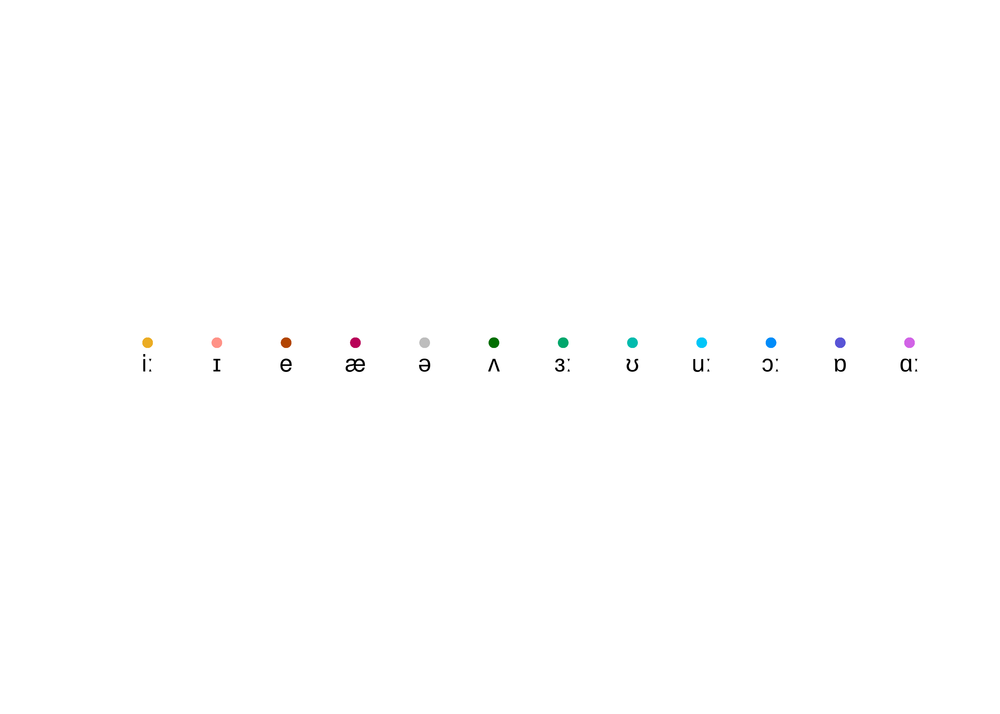

2 3-video-OZbCRN3C_Hs/
This is an automatically generated report.
2.1 General data
Video title: The Queen’s Christmas Broadcast 2020 - BBC
YouTube ID: OZbCRN3C_Hs
Duration of recording:
Speaker: 20201225
Sex: M
Palette used for vowels:

2.2 SPPAS-aligned data
Data aligned by SPPAS Bigi (2012).
2.2.1 General data
Total number of vowels collected: 812
Total number of vowels collected (function words excluded): 430
2.2.2 Vocalic space
2.2.2.1 Compared to US values from Hillenbrand (1995)
References: Hillenbrand et al. (1995)
2.2.2.2 Compared to UK values from Deterding (1997)
References: Deterding (1997)
2.2.3 Vowel distribution
2.2.4 Scatter plot of all vowels (function words excluded)
2.2.5 Boxplots of duration
2.2.6 Formant tracking
2.2.6.1 F1
2.2.6.2 F2
2.3 P2FA-aligned data
Data aligned by P2FA Yuan and Liberman (2008).
This is an automatically generated report.
2.3.1 General data
Total number of vowels collected: 823
Total number of vowels collected (function words excluded): 317
2.3.2 Vocalic space
2.3.2.1 Compared to US values from Hillenbrand (1995)
References: Hillenbrand et al. (1995)
2.3.2.2 Compared to UK values from Deterding (1997)
References: Deterding (1997)
2.3.3 Vowel distribution
2.3.4 Scatter plot of all vowels (function words excluded)
2.3.5 Boxplots of duration
2.3.6 Formant tracking
2.3.6.1 F1
2.3.6.2 F2
References
Bigi, B. 2012. “SPPAS: a tool for the phonetic segmentations of Speech.” Istanbul.
Deterding, David. 1997. “The Formants of Monophthong Vowels in Standard Southern British English Pronunciation.” Journal of the International Phonetic Association 27 (1-2): 47–55. https://doi.org/10.1017/s0025100300005417.
Hillenbrand, J., L. A. Getty, M. J. Clark, and K. Wheeler. 1995. “Acoustic Characteristics of American English Vowels.” The Journal of the Acoustical Society of America 97 (5): 3099–3111.
Yuan, J., and M. Liberman. 2008. “Speaker Identification on the SCOTUS Corpus.” Journal of the Acoustical Society of America, 123(5): 5687.